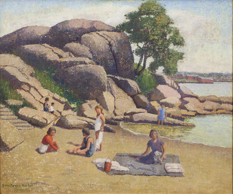

Children on the Beach
|  To discuss with Brian Clark Karen Quinn writing about Emma Fordyce MacRae notes she populated her landscapes with figures but that there was little movement and in this painting a timeless quality pervades the view. MacRae avoided the open vista of the ocean preferring inlets, harbors and beaches and in Children on the Beach she has reinforced the organisation of her composition of the picnic by focusing on the granite rocks. MacRae’s summer studio was above Stage Fort Park in Gloucester, MA and this Cape Ann scene may be a nearby beach particularly with the view of Gloucester in the background. Emma Fordyce MacRae has allowed the ground to be visible through the thinner layers of paint laid on top and it has become part of the composition. In his Treatment Report Jim Wright, Painting Conservation, Somerville, Ma on September 24, 2012 states: “The painting is in excellent condition. There are several very minor scattered retouches. Per the artist’s request it is not varnished nor should it be.” Children on the Beach No known exhibition history
|
{kind=link}